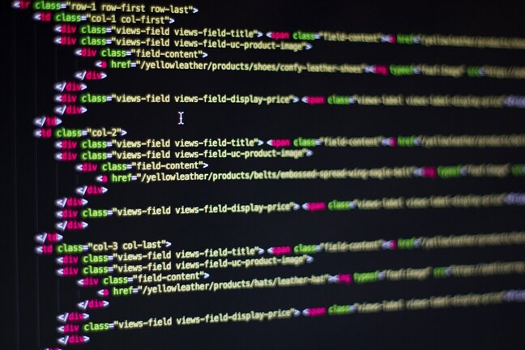
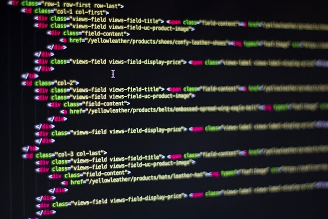

I'm A Developer
Web Design, Software Engineering
I have always been interested in computers, whether that be how they work or how the games I like playing were made. I was introduced to the world of computers and computer programming at the age of 12 when I received a Raspberry Pi 3 Model B for Christmas. The Raspberry Pi 3 Model B is a credit card-size computer that runs Linux and is used for home servers, emulation, and robotics, to name a few. I used it as a way to learn how to program using a book about Python and a version of Minecraft explicitly made for modification.
When I was 15, I started making games on the popular game platform ROBLOX using the programming language Lua. I currently know how to program in Python, Lua, and Javascript, and I am learning C++. I am studying software engineering at BYUI, Idaho, and learning to program games as a hobby. Any game I have made will be included here, and the source code will be available to be viewed on my GitHub, but I can't promise it will be readable.
 
